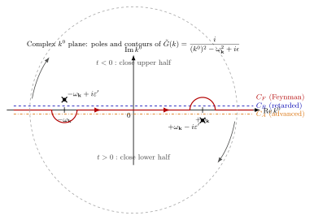

Feynman 传播子 — 自由场的全部内容
上一节我们终于把自由场的生成泛函 $Z_0[J] = \int\!\mathcal D\phi\,e^{iS_0+i\int J\phi}$ 形式地写下来, 可那积分真要动手算, 就绕不开一件事: 把二次型 $S_0 = \tfrac12\int d^4x\,\phi(\Box + m^2)\phi$ 的"逆算符"找出来. 这个逆算符, 就是 $G_F$. 只要它到手, 一切自由场的 $n$ 点函数就只剩"把 source 与 $G_F$ 两两配对"的组合学游戏. 更妙的是, 一旦加上相互作用, 这个 $G_F$ 又会化身为 Feynman 图上的内线——每一条虚线、每一段波浪、每一根箭头, 背后都是它. 所以把 $G_F$ 吃透, 等于把自由场的全部内容、以及后面所有微扰论的脚手架, 都先摆好了.
但 "Green 函数" 这个词在经典电动力学里其实有好几张脸: 推迟的、超前的、对称的... 在量子场论里为什么偏偏是 Feynman 那张 $i\epsilon$ 脸? "真空→真空" 这一要求, 凭什么就挑出了 $+i\epsilon$ 而不是 $-i\epsilon$? 这一节我们就从最具体的复平面几何, 把这件事讲个底朝天.
一、两点函数从哪来: 方程 + Fourier
把自由实标量场写成算符形式 (上一节已经给出路径积分版本, 这里只借一下算符语言作为锚点), 它在真空中的两点函数按时间先后排序就是
$$ i G_F(x-y) = \langle 0|T\phi(x)\phi(y)|0\rangle = \theta(x^0 - y^0)\langle 0|\phi(x)\phi(y)|0\rangle + \theta(y^0 - x^0)\langle 0|\phi(y)\phi(x)|0\rangle. \tag{1} $$
之所以叫 "传播子", 是因为它字面上就是 "$t = y^0$ 时刻在 $\mathbf y$ 造一个量子, 到 $t = x^0$ 时刻从 $\mathbf x$ 把它探出来" 的振幅——当然, 时间排序保证 "造" 永远在 "探" 之前. 把 $\phi$ 按照平面波展开, 后面我们会看到, 这个 $\theta$ 因子并不是硬贴上去的, 它会从 $i\epsilon$ 处方里自然长出来.
要知道 $G_F$ 长什么样, 最直接的办法是让 Klein-Gordon 算符作用上去. 自由场满足 $(\Box + m^2)\phi = 0$, 但只要中间卡了一个时间排序, 导数打在 $\theta$ 上就会变出一个 $\delta$. 细致算一遍 (对 $x^0$ 求两次导, 记得 $\partial_{x^0}\theta(x^0-y^0) = \delta(x^0-y^0)$, $[\phi(x), \phi(y)]$ 的等时对易关系是 $i\hbar \delta^3(\mathbf x - \mathbf y)$ 乘上合适的符号), 就会得到
$$ (\Box_x + m^2)\, G_F(x-y) = -i\, \delta^4(x-y). \tag{2} $$
换句话说, $G_F$ 是 Klein-Gordon 算符的 Green 函数. 方程 (2) 告诉我们, 只要把两边做 Fourier 变换,
$$ G_F(x-y) = \int \frac{d^4 k}{(2\pi)^4}\,\tilde G_F(k)\,e^{-ik\cdot(x-y)}, $$
并利用 $\Box e^{-ik\cdot x} = -k^2 e^{-ik\cdot x}$ 以及 $\delta^4(x-y) = \int d^4k/(2\pi)^4\, e^{-ik\cdot(x-y)}$, 立刻得
$$ (-k^2 + m^2)\tilde G_F(k) = -i \quad\Longrightarrow\quad \tilde G_F(k) = \frac{i}{k^2 - m^2}. $$
可这一步有个尴尬——分母的零点落在实轴上. $k^2 - m^2 = (k^0)^2 - \mathbf k^2 - m^2$, 只要 $(k^0)^2 = \mathbf k^2 + m^2 \equiv \omega_{\mathbf k}^2$, 分母就为零, 积分没定义. 方程 (2) 不足以唯一确定 Green 函数, 因为任何一个齐次解 $(\Box + m^2)f = 0$ 都能加到 $G_F$ 上而不改 $\delta$ 源. 经典电动力学里处理这尴尬的办法, 是由边界条件 (推迟或超前) 挑选. 量子场论里则由 真空的定义——即要求 "$+\infty$ 处只有真空"——来挑选, 而这翻译过来就是一个非常具体的 $i\epsilon$:
$$ \tilde G_F(k) = \frac{i}{k^2 - m^2 + i\epsilon}, \qquad \epsilon \to 0^+. \tag{3} $$
下一节我们会把这个 $i\epsilon$ 一步步拆开看: 它究竟把极点推到了哪里, 为什么推到那儿, 以及它怎么恰好等价于时间排序 $T$.

二、$i\epsilon$ 处方的几何: 极点、轮廓与时间排序
这一节我们完全不挥手, 把 $i\epsilon$ 的来龙去脉在复 $k^0$ 平面上走一遍. 这是 QFT 教科书上引用最多、但也最容易被读者"跳过"的一段, 所以我们一步也不省.
先看分母. 把 (3) 的分母按 $k^0$ 展开:
$$ k^2 - m^2 + i\epsilon = (k^0)^2 - (\mathbf k^2 + m^2) + i\epsilon = (k^0)^2 - \omega_{\mathbf k}^2 + i\epsilon, $$
其中 $\omega_{\mathbf k} = +\sqrt{\mathbf k^2 + m^2} \gt 0$. 把它分解成两个一阶因子:
$$ (k^0)^2 - \omega_{\mathbf k}^2 + i\epsilon = (k^0 - \omega_{\mathbf k} + i\epsilon')(k^0 + \omega_{\mathbf k} - i\epsilon'), $$
其中 $\epsilon' = \epsilon/(2\omega_{\mathbf k}) \gt 0$ (我们用 $\epsilon'$ 只是提醒自己: 正极点和负极点分别被推了一个正的小量, 具体大小是 $\omega_{\mathbf k}$ 的函数, 但这不改变拓扑, 反正 $\epsilon\to 0^+$ 后只关心"上半还是下半"). 可见两个极点的位置精确地是:
- 正能极点: $k^0 = +\omega_{\mathbf k} - i\epsilon'$, 落在 实轴 下方 ($\text{Im}\,k^0 \lt 0$);
- 负能极点: $k^0 = -\omega_{\mathbf k} + i\epsilon'$, 落在 实轴 上方 ($\text{Im}\,k^0 \gt 0$).
这是 Feynman 处方的几何全部. 把两个极点记在图 1 上.
现在来算 (3) 的 $k^0$ 部分积分. 我们要算
$$ I(t) = \int_{-\infty}^{+\infty}\frac{dk^0}{2\pi}\,\frac{i\, e^{-i k^0 t}}{(k^0)^2 - \omega_{\mathbf k}^2 + i\epsilon}, \qquad t \equiv x^0 - y^0. $$
在 $k^0 = R\,e^{i\varphi}$ 的大圆上, $e^{-ik^0 t} = e^{-iRt\cos\varphi} e^{Rt\sin\varphi}$. 要让大圆贡献为零, 必须 $Rt\sin\varphi \lt 0$:
- 若 $t \gt 0$: 需要 $\sin\varphi \lt 0$, 即 轮廓在下半平面 ($-\pi \lt \varphi \lt 0$) 闭合;
- 若 $t \lt 0$: 需要 $\sin\varphi \gt 0$, 即 轮廓在上半平面 ($0 \lt \varphi \lt \pi$) 闭合.
这就是 "Jordan 引理" 的具体相. 现在把上面两个极点落实到这两种闭合方式里:
(a) $t \gt 0$: 闭合下半平面, 只圈住正能极点 $k^0 = +\omega_{\mathbf k} - i\epsilon'$. 注意下半平面闭合是 顺时针 绕行, 留数定理带一个 $-2\pi i$. 留数本身由 $(k^0 - \omega_{\mathbf k} + i\epsilon')^{-1}$ 在极点处的系数给出, 是 $1/(2\omega_{\mathbf k})$ 乘 $e^{-i\omega_{\mathbf k} t}$. 整理:
$$ I(t \gt 0) = \frac{1}{2\pi}\cdot(-2\pi i)\cdot \frac{i\, e^{-i\omega_{\mathbf k} t}}{2\omega_{\mathbf k}} = \frac{e^{-i\omega_{\mathbf k} t}}{2\omega_{\mathbf k}}. $$
(b) $t \lt 0$: 闭合上半平面, 只圈住负能极点 $k^0 = -\omega_{\mathbf k} + i\epsilon'$. 上半平面是 逆时针, 带 $+2\pi i$. 留数由 $(k^0 + \omega_{\mathbf k} - i\epsilon')^{-1}$ 在 $k^0 = -\omega_{\mathbf k}$ 的系数给出, 是 $1/(-2\omega_{\mathbf k})$ 乘 $e^{+i\omega_{\mathbf k} t}$. 整理 (把负号算进去):
$$ I(t \lt 0) = \frac{1}{2\pi}\cdot(+2\pi i)\cdot\frac{i}{-2\omega_{\mathbf k}}\cdot e^{+i\omega_{\mathbf k} t} = \frac{e^{+i\omega_{\mathbf k} t}}{2\omega_{\mathbf k}}. $$
两段合并, 再把空间 Fourier 重新装回去, 就得到
$$ G_F(x-y) = \int\frac{d^3 k}{(2\pi)^3 2\omega_{\mathbf k}}\left[\theta(t)\,e^{-i\omega_{\mathbf k} t + i\mathbf k\cdot(\mathbf x - \mathbf y)} + \theta(-t)\,e^{+i\omega_{\mathbf k} t + i\mathbf k\cdot(\mathbf x - \mathbf y)}\right]. $$
第一项是 "正能量向前传", 第二项 (把 $\mathbf k\to -\mathbf k$ 换个名字, 它就变成 $e^{i\omega_{\mathbf k} t - i\mathbf k\cdot(\mathbf x - \mathbf y)}$) 是 "负能量向后传"——或者 Feynman 在 1949 年的著名说法, "反粒子是沿时间反向传播的粒子". 这两项合起来正是 (1) 里那个时间排序的积分表达. $\theta$ 函数不是外面贴上去的, 它是 $i\epsilon$ 选了极点位置后, 由 Jordan 引理强迫出来的.
这里值得停下来想一下: 如果我们换一种 $i\epsilon$ 会怎样. 推迟传播子 $G_R$: 把 $i\epsilon$ 改成 $i\epsilon\, \text{sgn}(k^0)$, 或者更简单地, 把分母写成 $(k^0 + i\epsilon)^2 - \omega_{\mathbf k}^2$, 两个极点就都跑到实轴 下方 去了. 这样 $t \lt 0$ 时闭合上半平面, 啥也捡不到, $G_R$ 自动为零——"推迟" 的因果性就从轮廓里跑出来了. 超前传播子 $G_A$ 反过来: 两个极点都在 上方, $t \gt 0$ 时反而为零. 对称传播子 (主值处方) 则把两个极点都坐在实轴正中间, 用主值积分. 经典电动力学用 $G_R$ 算推迟势, 量子场论用 $G_F$ 算真空振幅——这不是口味问题, 而是因为 Feynman 处方正好对应 "初态和末态都是真空"这一非常具体的物理边界条件: $t \to -\infty$ 时正频模 (粒子) 朝未来传播, $t \to +\infty$ 时负频模 (反粒子) 朝过去传播, 两头连的都是零粒子的真空态. 其他处方对应别的边界条件, 不是量子场论要的.
所以一张看似轻描淡写的 "$+i\epsilon$", 背后是一整套时间、因果和真空的选择. 跳过这一页, 后面 Feynman 图的规则就永远含着一丝说不清的味道.
三、生成泛函与 Wick 定理: "自由场 = source × G"
现在把 $G_F$ 放回到路径积分里. 上一节我们已经论证, 自由场的生成泛函是个高斯积分, 形式结果是
$$ Z_0[J] = \int \mathcal D\phi\,e^{iS_0[\phi] + i\int J\phi} \Big/ \int\mathcal D\phi\, e^{iS_0[\phi]} = \exp\!\left[-\frac{i}{2}\int d^4x\,d^4y\, J(x)\, G_F(x-y)\, J(y)\right]. $$
(指数上的 $-i/2$ 和 $G_F$ 的 $+i$ 一起, 正好把我们 (3) 里的正负号吸收干净. 教科书上符号约定五花八门, 但只要 $G_F$ 是 $(\Box+m^2)$ 的 Green 函数、$i\epsilon$ 处方正确, 物理就对. 本文用 Peskin-Schroeder 约定.)
任意 $n$ 点函数都可以从 $Z_0[J]$ 里取 $J$ 的泛函导数读出. 取两次得到两点函数 $i G_F$, 取四次得到 三项两两配对之和, 这就是 Wick 定理 最赤裸的版本: 自由场中任何多点相关函数 = 全部可能的两两配对的乘积之和. 每一个 "配对" 就是一条内线, 带一个 $G_F$. 这也正是为什么一旦加上相互作用、做微扰展开时, 画出来的东西就叫 Feynman 图——节点是相互作用项, 线就是 $G_F$.
更进一步, 我们可以把 $Z_0[J]$ 重写成 $Z_0[J] = e^{i W_0[J]}$, 其中
$$ W_0[J] = -\frac{1}{2}\int d^4x\,d^4y\, J(x)\, G_F(x-y)\, J(y). $$
这是自由场的 连通生成泛函. 它的物理含义很干净: 在外源 $J$ 的存在下, 真空能量获得一个由 $J$-$J$ 相互作用贡献的修正, 两个 $J$ 通过传播子 $G_F$ 耦合. 所有自由场计算——从外部线性源下的真空极化, 到两个 source 之间传递的有效相互作用——说到底就是把 source 放到正确的地方, 把 $G_F$ 串起来. 到这一步我们可以有底气地说: 自由场论已经没剩什么秘密, 全部藏在 $G_F$ 这一个对象里.
四、Coulomb 势作为无质量极限, 以及历史的三人接力
这一节做两件事: 给一个具体的数字, 以及把历史补上.
先看 无质量极限 $m \to 0$. 这时 $\tilde G_F(k) = i/(k^2 + i\epsilon)$, 极点移到 $k^0 = \pm|\mathbf k| \mp i\epsilon'$. 两个带源的静止电荷之间会交换这样的量子, 只是我们现在处理的是标量场, 所以先把它作为 "无质量标量 Yukawa 势" 来算——电磁的 Coulomb 势来自矢量场 $A^\mu$, 但在静态近似下结构和标量场的无质量 Green 函数完全一样, 只差一个 "$-$" 号和介电因子. 具体地, 考虑两个静态点源 $J(x) = q_1\delta^3(\mathbf x - \mathbf x_1) + q_2\delta^3(\mathbf x - \mathbf x_2)$, 它们对真空能量的贡献 (即相互作用势能 $V$ 乘时间长度 $T$) 直接读自 $W_0[J]$ 里的交叉项:
$$ -V(r)\,T = -\int dt_1\, dt_2\, q_1 q_2\, G_F(x_1 - x_2)\bigg|_{\text{静态}}. $$
静态意味着我们对 $t_1, t_2$ 分别积分, 得到的只是 $G_F$ 的 "时间整合" 部分. 对无质量场, $\int dt\, G_F(t, \mathbf r)$ 的空间 Fourier 变换就是 $1/\mathbf k^2$, 反变换到位置空间:
$$ \int\frac{d^3 k}{(2\pi)^3}\frac{e^{i\mathbf k\cdot\mathbf r}}{\mathbf k^2} = \frac{1}{4\pi r}. $$
这正是我们熟悉的 Coulomb 1/r! 对同号电荷, 组合起来就是 $V(r) = q_1 q_2/(4\pi r)$, 这 就 是 静 电 势. Coulomb 势从来不是独立的经验事实, 它只是 "无质量规范玻色子的 Feynman 传播子的空间部分" 而已. 代点数字感受一下: 两个质子相距 $r = 1\,\text{fm} = 10^{-15}\,\text{m}$, 电势能
$$ V = \frac{e^2}{4\pi\varepsilon_0 r} = \frac{1.44\,\text{MeV}\cdot\text{fm}}{1\,\text{fm}} = 1.44\,\text{MeV}. $$
(数字记忆: 精细结构 $\alpha = e^2/(4\pi\varepsilon_0 \hbar c) \approx 1/137$, 所以 $e^2/(4\pi\varepsilon_0) = \alpha \hbar c \approx (1/137)\cdot 197\,\text{MeV}\cdot\text{fm} \approx 1.44\,\text{MeV}\cdot\text{fm}$.) 1.44 MeV 是一个令人敬畏的数: 它大于原子物理所有典型能量 (eV 量级), 又小于核物理结合能 (几十 MeV). 这个台阶就是为什么原子核能存在——短程强力必须胜过 1.44 MeV 的 Coulomb 排斥, 才能把质子粘在一块儿.
再看 有质量极限. 把 $m$ 打开, $\tilde G_F = i/(k^2 - m^2 + i\epsilon)$, 位置空间的静态 Fourier 变换给出 Yukawa 势:
$$ V_Y(r) = \frac{g^2}{4\pi}\frac{e^{-m r}}{r}. $$
这是 1935 年 Yukawa 为了解释核力写下的公式. 对于 π 介子 $m \approx 140\,\text{MeV}$, 康普顿波长 $1/m = \hbar/(mc) = 197\,\text{MeV}\cdot\text{fm}/140\,\text{MeV} \approx 1.4\,\text{fm}$. 超过这个距离, Yukawa 势指数压低, 核力就"消失"了——核力不是长程的, 正因为它的载体 π 介子有质量. 对比 Coulomb 的 $1/r$ 和 Yukawa 的 $e^{-mr}/r$, 两个势共用同一副骨架 ($G_F$ 的空间部分), 唯一的差别是传播子的质量——交换的量子轻, 势就拖得长; 交换的量子重, 势就缩得短. 这是现代强弱相互作用结构的缩影.
最后把历史补上. 通常人们把传播子完全归到 Feynman 1949 年的名下——这年他在 Phys. Rev. 上发表 "Space-Time Approach to Quantum Electrodynamics", 第一次把图规则、时间排序、$i\epsilon$ 处方明明白白写下来, 相对论性 QED 计算第一次变成一件大家都能动手做的事. 但 $G_F$ 最早的影子要追到 1934 年的 Ernst Stueckelberg. 他当年独自摸索相对论性两体散射, 就已经写出了带有"正能量朝未来、负能量朝过去"结构的传播子——甚至比 Dirac 的反粒子解释还早一步. 可惜 Stueckelberg 在瑞士, 用了自己发明的一套符号, 文章又压了几年才发, 影响力被 Feynman 的清晰图示完全盖住. 平行地, Schwinger 在 1948-1949 年独立给出了 QED 的正则量子化版本——同样的物理, 但不走路径积分, 而是用算符场方程和时间排序直接推导. 更晚一点, 朝永振一郎的工作被 Dyson 串联进来, 证明 Feynman 图、Schwinger 算符、朝永场论三种看似完全不同的语言其实是同一个理论. 正是在这一"统一"完成之后, Feynman 传播子成了整代理论物理的通用语. 如今你打开任何一本 QFT 教材, 第一个非平凡公式多半就是 (3), 但它背后是三个人几乎在同一年分别触到同一个对象的故事.
小结
一个 $i\epsilon$, 三种解读: 它是 Klein-Gordon Green 函数的边界条件, 是复 $k^0$ 平面上极点的具体位置, 是时间排序的 Fourier 表达. 自由场的全部物理——两点函数、$n$ 点 Wick 展开、静电 Coulomb 势、Yukawa 短程力——都装在 $\tilde G_F(k) = i/(k^2 - m^2 + i\epsilon)$ 这一行公式里. 下一节我们要把视角再转一下: 为什么 "把 $|\psi\rangle$ 升级成场算符" 是不可避免的一步? 单粒子量子力学不是挺好吗, 为什么非得进到第二量子化? 答案就藏在 $G_F$ 里那个诡异的 "反粒子向过去传": 一旦允许相对论性动量 $k^2 = m^2$, 单粒子 Hilbert 空间就装不下它, 必须让粒子数自己变成算符的本征值. 再往后, 当我们把规范场最小耦合进来, 每一条内线仍是 $G_F$, 只不过多了个 Lorentz 指标; 每一个顶点仍是拉氏量里的 $\phi^n$ 项, 只不过多了个耦合常数. 整个标准模型的计算骨架, 就搭在本节这一行 $i\epsilon$ 处方上.
▲